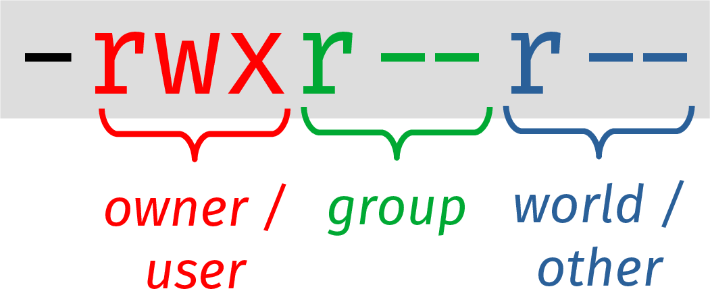

File Permissions
Let’s look at the full directory listing in our shell-lesson-data/ directory:
ls -l
total 56
drwxrwxr-x 2 mzingale domain users 4096 Jul 30 2021 creatures
drwxrwxr-x 5 mzingale domain users 4096 Jul 30 2021 data
drwxrwxr-x 2 mzingale domain users 4096 Jul 30 2021 molecules
drwxrwxr-x 3 mzingale domain users 4096 Jul 30 2021 north-pacific-gyre
-rw-rw-r-- 1 mzingale domain users 86 Jul 30 2021 notes.txt
-rw-rw-r-- 1 mzingale domain users 13 Aug 4 2021 numbers.txt
-rw-rw-r-- 1 mzingale domain users 32 Jul 30 2021 pizza.cfg
-rw-rw-r-- 1 mzingale domain users 21583 Jul 30 2021 solar.pdf
drwxrwxr-x 5 mzingale domain users 4096 Jul 30 2021 writing
Let’s talk about the fields / columns that we see the listing:
The first field (e.g.
drwxrwxr-x) are the permissions of the file / directory. They control who can read, write, and execute the file.We’ll skip the second column—we rarely need to worry about this
The third field,
mzingalein my case, is the username of the owner of the fileThe fourth field,
domain usershere, is the group that the file belongs to. Groups are a Unix way to group together a bunch of users to give them all permission to access a file.
We already discussed the remaining fields.
Let’s look at the file permission block. It looks something like this:
{kind=link}
The first character is either
-for a regular file,lfor a link, ordfor a directoryThe next characters are grouped into 3 sets of 3 characters. The sets are:
owner or user : this tells you what you are allowed to do with the file
group : this tells you what anyone in the Unix group is allowed to do with the file
other : this tells you what any user on the system that doesn’t fall into the first 2 categories can do with the file
Within each set, the meanings are:
r: read permissionw: write permissionx: execute permission
In the image above, the owner has read, write, and execute permissions, while members of the same group and anyone else only have read permissions for the file.
Modifying permissions
We can use the chmod command to change permissions on a file.
For example, to remove the group’s write permission on solar.pdf, we would do:
chmod g-w solar.pdf
Here, g means “group”. You could also do u for “user” or
o for “other”. The - means remove the permission (and a +
would add the permission), then the letters after that are what
permission you are altering, r, w or x.
Note
There is an equivalent numerical way to describe permissions that you can read about here in the Wikipedia File-system permissions article.
Note
In order to be allowed to cd into a directory, you need to have
execute permission on that directory.
For example, try:
chmod u-x creatures
cd creatures
Executable scripts
Let’s create a simple script that just does ls -l for us. But
we’ll look to see how to make it executable on its own. Put the
following into a file myscript.sh (the .sh extension isn’t
required, but it can be useful as a prompt to the user).
#!/bin/bash
ls -l
The first line is new to us. That is called a shebang and it tells the
operating system what interpreter to use to execute the script. In
this case, we point to bash.
The next thing we need to do is make the script executable:
chmod u+x myscript.sh
We can then run the script simply as:
./myscript.sh
Important
The leading ./ here tells bash the path to find the file. In
this case, you are saying that the script is in the current (.)
directory.
Depending on how your system is set up, bash might not search in your current directory for commands when you type them, e.g., if you just do:
myscript.sh
you might be met with myscript.sh: command not found.